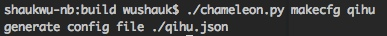

Hello World
四步搭建一个支持360平台的环境
- 从Android Studio生成一个新的Android工程，假设这个工程的目录是PROJECT_DIR
- 编写平台的配置文件，使用chameleon.py生成一个奇虎的配置文件, 按照模板进行修改
- 使用chameleon.py创建多平台的开发环境。
./chameleon.py generate ./ $PROJECT_DIR/app - 替换build.gradle
cd $PROJECT_DIR/app; mv build.gradle.default build.gradle
此时在android studio重新同步一下工程，可以看到Build Variant已经多了两个选项，“qihuDebug”, “qihuRelease” 
同时chameleon_sdk.jar也已经被拷贝到$PROJECT_DIR/app/libs底下，并且加入到了app的编译依赖中。接下来就可以在代码里面使用Chameleon SDK提供的各种函数了。
使用Chameleon SDK
环境搭建好之后，就可以像使用普通的jar包一样使用Chameleon SDK了，例如可以在MainActivity的onCreate添加初始化函数
PlatformInterface.init(this, true, new IDispatcherCb() {
@Override
public void onFinished(int retCode, JSONObject data) {
}
});
调用平台登录
PlatformInterface.login(this,
new IDispatcherCb() {
@Override
public void onFinished(int i,
JSONObject jsonObject) {
// callback from chameleon SDK
}
},
new IAccountActionListener() {
// implementations
});
编译和打包
- 在Android Studio中直接选择Build Variant，编译某个平台的debug或者release版本
- 命令行下，直接在工程的根目录底下运行
就可以编译和打包所有平台的APK./gradlew assemble
Sample
具体例子参见sample/chameleon_java